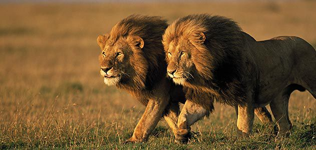
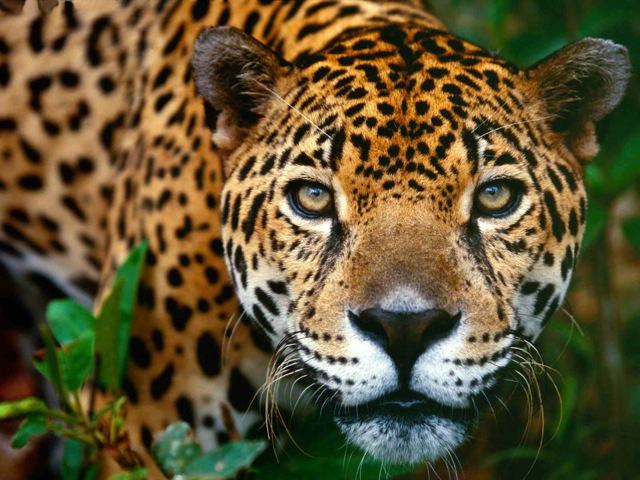
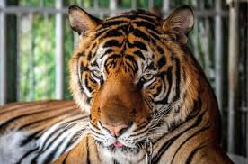

Wildcats have been known to hunt in pairs or in family groups, with each cat devoted entirely to >listening, stalking, or pouncing.Lets have alook at the different wild cats and their uniqueness.
-
LION

- Male lions are distinct for their great shaggy necks.
- A group, or pride, can be up to 30 lions, depending on how much food and water is available.
- A lion's roar can be heard up to eight kilometres away.
-
JAGUAR

- Jaguar kills by piercing its prey’s skull or neck with one swift bite
- Jaguars are good swimmers of all wild cats and live near water bodies.
- Jaguars are famous for their easily recognized rose-like black markings (rosettes) all over their tawny-colored bodies,but they can vary from reddish-brown to black
-
TIGER

- Tigers are the largest cat species in the world reaching up to 3.3 meters in length and weighing up to 670 pounds!
- Their lifespan is between b20-26 years
- They have whiskers which detect sensory information, helping them to navigate in the dark and attack their prey more accurately.